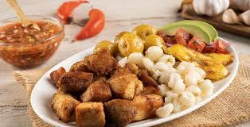

Fritada

Descripción
La fritada es un plato típico ecuatoriano donde se cocina la carne de
chancho en agua y jugo de naranja con comino, ajo, cebolla, chalote, sal y
pimienta hasta que no quede agua y la carne se empieza a dorar en su
propia grasa.
Ingredientes
- 4 Tazas Carne De Cerdo cortada en cubos
- 2 Cucharadas Aceite Vegetal
- 2 Sobres Caldo Criollita Maggi®
- 1 Taza Cebolla Morada cortada en rodajas
- 5 Cucharadas Ajo
- 1 Cubo Caldo De Costilla Maggi®
- 3 Tazas Agua
- 1 Cucharadita Comino Molido o al gusto
Preparacion
-
En un tazón, sazona la carne de cerdo con Criollita MAGGI®. Reserva.
-
En una olla con aceite caliente, a fuego medio, dora cebolla, carne y
ajo. Añade 3 tazas de agua.
-
Incorpora el cubito de Caldo de Costilla MAGGI® y deja cocer. Cuando el
líquido se haya evaporado, deja dorar la carne por 20 minutos más a
fuego bajo, espolvorea comino.
- Sirve con choclo, maduros y ensalada fresca.
Inicio